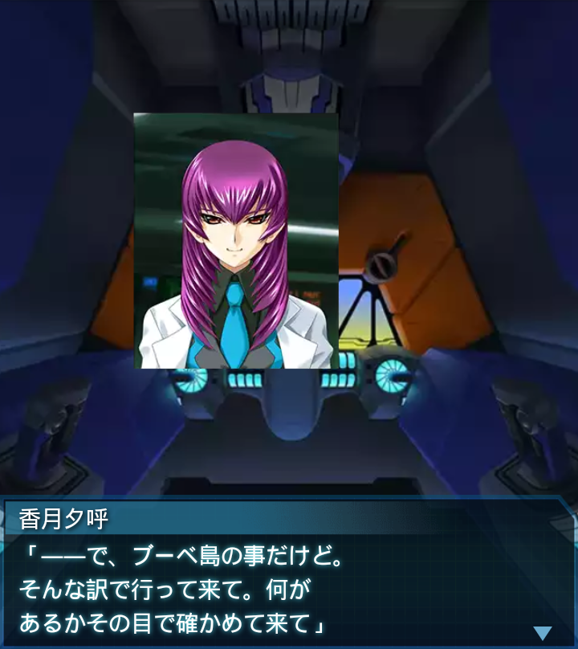

南極・東オングル島沖

『誰』
「…奴ら、完全に南極から
離れようとしているな…。一体
どこに向かおうとしてるんだ？」
香月夕呼
「恐らくブーベ島よ。『世界で
最も隔絶した孤島』と呼ばれる島
が、２５００ｋｍ先にあるの」
香月夕呼
「旧ノルウェー領の無人島で、
気象観測所しかなかった
筈なんだけど、もしかしたら…」
『誰』
「そこにハイヴか研究施設が…？
ＢＥＴＡの奴ら、どれだけ鼻が
いいんだよ！」
香月夕呼
「とにかく指示通り、上手く
間引いて発信器を打ち込むの。
いいわね！」
「司令、ＢＥＴＡが多年氷帯を
抜け、海に入りました。後は
発信器の信号頼りです」
香月夕呼
「お疲れ。ところで話の続きよ。
マラジョージナヤは複数の世界が
融合していた可能性があるわ」
香月夕呼
「研究施設がある世界、南極の
地下にＢＥＴＡが掘った洞窟が
ある世界、そしてこの世界…」

香月夕呼
「だから施設の地下に洞窟がある
のは例外なのよ。あんたが言う
ように、普通は無い…」
『誰』
「で、その世界は、施設の破壊に
よって全部切り離され、本来のこの
世界の姿に戻った…？」
香月夕呼
「そういう仮定が成り立つわね。
予想はしてたけど、世界は随分
複雑に絡み合っているようね…」
『誰』
「一体、あの施設に何があれば
そんなトンデモないことが起きる
んだ？司令には解るんですか？」
香月夕呼
「さあね～。何にしろもっと情報が
無いと確証には至らないわね。
こんな例外もあるワケだし」

香月夕呼
「――で、ブーベ島の事だけど。
そんな訳で行って来て。何が
あるかその目で確かめて来て」
『誰』
「え！？２５００ｋｍはさすがに
無理ですよ！補給だって――」
香月夕呼
「昭和基地に設備があるわ。砕氷
能力を持った戦術機母艦もね。
日本帝国舐めないで欲しいわね」
香月夕呼
「いや～さすがあたし。先見性
あるわ～。ＢＥＴＡより先に
着いて頂戴ね。宜しく～」
『誰』
「り、了解…」